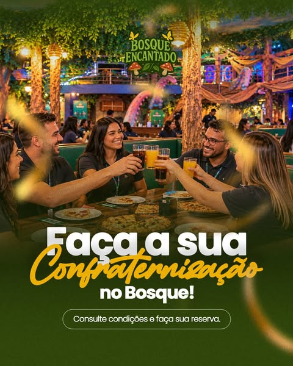
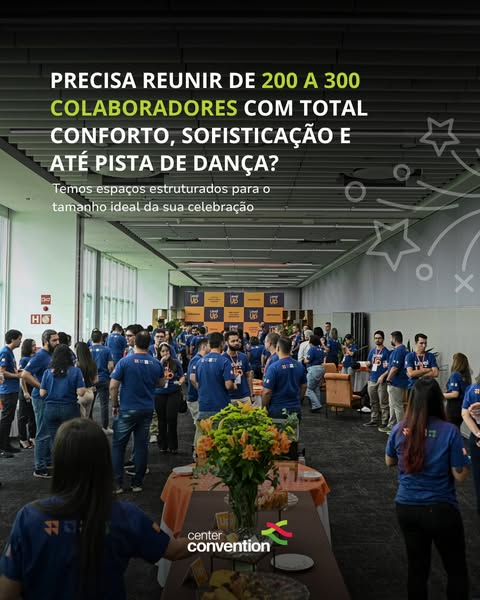

<title>Referências de Confraternização</title>
<meta name="claude:viewport-fit-sides" content="cover">
<link rel="stylesheet" href="https://fonts.googleapis.com/css2?family=Bricolage+Grotesque:opsz,wght@12..96,600;12..96,700;12..96,800&family=Fraunces:ital,opsz,wght@0,9..144,500;1,9..144,500&family=Inter:wght@400;500;600&display=swap">
<style>
  /* Layout: cada referência é um cartão grande estilo slide — imagem cheia de um lado, conteúdo do outro. Fundo claro e quente. */
  :root{
    --bg:#F4F0E8; --card:#ffffff; --ink:#221b14; --muted:#6f6454; --faint:#a89c8a;
    --line:#e7ded1; --imgbg:#ede5d8;
    --accent:#b4452f; --accent-ink:#9a3522; --accent-tint:#fbeee6;
    --gold:#c3912f;
    --shadow:0 2px 4px rgba(34,27,20,.05), 0 26px 60px rgba(34,27,20,.12);
    --disp:"Bricolage Grotesque",system-ui,sans-serif;
    --serif:"Fraunces",Georgia,serif;
    --body:"Inter",system-ui,sans-serif;
  }
  @media (prefers-color-scheme:dark){:root:not([data-theme="light"]){
    --bg:#16130e; --card:#201c15; --ink:#f3ece0; --muted:#a89d8c; --faint:#6b6050;
    --line:#332c22; --imgbg:#0f0c08;
    --accent:#e07550; --accent-ink:#e8886a; --accent-tint:#2a1a12;
    --gold:#d6b45f;
    --shadow:0 2px 4px rgba(0,0,0,.4), 0 26px 60px rgba(0,0,0,.5);
    color-scheme:dark;
  }}
  :root[data-theme="dark"]{
    --bg:#16130e; --card:#201c15; --ink:#f3ece0; --muted:#a89d8c; --faint:#6b6050;
    --line:#332c22; --imgbg:#0f0c08;
    --accent:#e07550; --accent-ink:#e8886a; --accent-tint:#2a1a12;
    --gold:#d6b45f;
    --shadow:0 2px 4px rgba(0,0,0,.4), 0 26px 60px rgba(0,0,0,.5);
    color-scheme:dark;
  }
  *{box-sizing:border-box}
  body{background:var(--bg);color:var(--ink);font-family:var(--body);line-height:1.6;font-size:16px;-webkit-font-smoothing:antialiased}
  .wrap{max-width:1000px;margin:0 auto;
    padding-left:max(20px,env(safe-area-inset-left,0px));padding-right:max(20px,env(safe-area-inset-right,0px))}
  h1,h2,h3{font-family:var(--disp);font-weight:700;line-height:1.08;text-wrap:balance;margin:0}
  p{margin:0}

  /* MASTHEAD claro */
  .hero{padding-top:calc(env(safe-area-inset-top,0px) + 3.4rem);padding-bottom:1.4rem}
  .eyebrow{font-family:var(--disp);font-size:.76rem;font-weight:700;letter-spacing:.18em;
    text-transform:uppercase;color:var(--accent-ink);display:flex;align-items:center;gap:.7rem}
  .eyebrow::after{content:"";height:2px;width:46px;background:var(--accent);border-radius:2px}
  .hero h1{font-size:clamp(2.3rem,6.6vw,3.7rem);font-weight:800;letter-spacing:-.02em;margin:1rem 0 .9rem;max-width:15ch}
  .hero .lede{font-family:var(--serif);font-size:clamp(1.15rem,2.6vw,1.4rem);line-height:1.46;
    color:var(--muted);max-width:46ch;font-weight:500}
  .meta{display:flex;flex-wrap:wrap;gap:.6rem;margin-top:1.3rem}
  .meta span{font-size:.78rem;color:var(--muted);background:var(--card);border:1px solid var(--line);
    border-radius:999px;padding:.4rem .85rem;box-shadow:0 1px 2px rgba(34,27,20,.04)}
  .meta b{color:var(--accent-ink);font-family:var(--disp)}

  /* PADRÕES */
  .pad{padding-block:2.4rem}
  .pad .kick{font-family:var(--disp);font-size:.76rem;font-weight:700;letter-spacing:.14em;
    text-transform:uppercase;color:var(--faint);margin-bottom:.5rem}
  .pad h2{font-size:clamp(1.4rem,3.6vw,1.95rem);margin-bottom:1.3rem}
  .pats{display:grid;grid-template-columns:repeat(3,1fr);gap:.9rem}
  @media(max-width:680px){.pats{grid-template-columns:1fr}}
  .pat{background:var(--card);border:1px solid var(--line);border-radius:16px;padding:1.2rem 1.25rem;box-shadow:0 1px 2px rgba(34,27,20,.04)}
  .pat .n{display:inline-flex;align-items:center;justify-content:center;width:1.9rem;height:1.9rem;
    border-radius:8px;background:var(--accent-tint);color:var(--accent-ink);
    font-family:var(--disp);font-weight:800;font-size:.95rem}
  .pat h3{font-size:1.04rem;margin:.6rem 0 .35rem}
  .pat p{font-size:.9rem;color:var(--muted)}

  /* ACERVO / CARTÕES GRANDES */
  .cat{padding-block:1.4rem 3.4rem}
  .cat .kick{font-family:var(--disp);font-size:.76rem;font-weight:700;letter-spacing:.14em;
    text-transform:uppercase;color:var(--faint);margin-bottom:.5rem}
  .cat h2{font-size:clamp(1.4rem,3.6vw,1.95rem);margin-bottom:.4rem}
  .cat .sub{color:var(--muted);max-width:60ch;margin-bottom:1.8rem}

  .deck{display:flex;flex-direction:column;gap:1.5rem}
  .card{background:var(--card);border:1px solid var(--line);border-radius:24px;overflow:hidden;
    box-shadow:var(--shadow);display:grid;grid-template-columns:minmax(0,42%) 1fr;
    transition:transform .3s ease, box-shadow .3s ease}
  .card:hover{transform:translateY(-4px);box-shadow:0 4px 8px rgba(34,27,20,.06),0 34px 70px rgba(34,27,20,.16)}
  @media(max-width:720px){.card{grid-template-columns:1fr}}

  .pic{position:relative;background:var(--imgbg);min-height:420px}
  @media(max-width:720px){.pic{min-height:0;aspect-ratio:1/1}}
  .pic img{position:absolute;inset:0;width:100%;height:100%;object-fit:cover;display:block}
  .pic .ribbon{position:absolute;top:1rem;left:1rem;z-index:2;display:inline-flex;align-items:center;gap:.4rem;
    background:rgba(20,16,12,.72);color:#fff;font-size:.74rem;font-weight:600;
    padding:.35rem .7rem;border-radius:999px;backdrop-filter:blur(4px)}

  .body{padding:2.1rem 2.3rem;display:flex;flex-direction:column;justify-content:center;gap:.1rem;min-width:0}
  @media(max-width:720px){.body{padding:1.5rem 1.4rem}}
  .tagline{display:flex;align-items:center;gap:.7rem;margin-bottom:.5rem}
  .tagline .idx{font-family:var(--disp);font-weight:800;font-size:1.5rem;color:var(--accent);line-height:1}
  .tagline .ang{font-family:var(--disp);font-size:.73rem;font-weight:700;letter-spacing:.1em;
    text-transform:uppercase;color:var(--faint)}
  .body h3{font-size:1.5rem;letter-spacing:-.01em;margin-bottom:.9rem}
  .gancho{font-family:var(--serif);font-style:italic;font-weight:500;font-size:clamp(1.3rem,2.3vw,1.6rem);
    line-height:1.3;color:var(--ink);margin:0 0 1.1rem}
  .copybox{background:var(--accent-tint);border-radius:14px;padding:1rem 1.15rem;font-size:.95rem;color:var(--ink)}
  .copybox .tg{display:inline-block;font-family:var(--disp);font-size:.65rem;font-weight:800;letter-spacing:.11em;
    text-transform:uppercase;color:#fff;background:var(--accent);padding:.2rem .5rem;border-radius:5px;margin-right:.55rem;vertical-align:.09em}
  .copybox b{color:var(--accent-ink);font-weight:600}
  .link{display:inline-flex;align-items:center;gap:.3rem;margin-top:1rem;font-size:.84rem;font-weight:500;
    color:var(--muted);text-decoration:none;width:fit-content}
  .link:hover{color:var(--accent-ink)}
  .link::after{content:"→";transition:transform .2s ease}
  .link:hover::after{transform:translateX(3px)}

  footer{border-top:1px solid var(--line);padding-block:2.4rem;color:var(--muted);font-size:.9rem}
  .colophon{font-family:var(--disp);font-size:.74rem;letter-spacing:.14em;text-transform:uppercase;color:var(--faint);margin-bottom:.7rem}
  footer b{color:var(--ink)}
  @media(prefers-reduced-motion:reduce){.card{transition:none}.card:hover{transform:none}}
</style>

<header class="hero wrap">
  <p class="eyebrow">PomerMarkt · Confraternização de empresas</p>
  <h1>O que já está funcionando lá fora</h1>
  <p class="lede">Anúncios reais de espaços, buffets e hotéis do Brasil vendendo confraternização de fim de ano agora — com o gancho de cada e o que dá pra copiar.</p>
  <div class="meta"><span><b>09</b> referências</span><span><b>03</b> padrões</span><span>Fonte: Biblioteca de Anúncios · nov/2026</span></div>
</header>

<section class="pad wrap">
  <p class="kick">Antes de olhar as peças</p>
  <h2>Três padrões se repetem em quase todas</h2>
  <div class="pats">
    <div class="pat"><span class="n">01</span><h3>Falam com o organizador</h3><p>"Já escolheu onde?", "Ficou responsável pela festa da firma?". A peça conversa com quem tem a dor de resolver.</p></div>
    <div class="pat"><span class="n">02</span><h3>Urgência de data real</h3><p>"Dezembro chega rápido e as melhores datas somem", "agenda aberta", "não deixe pra última hora".</p></div>
    <div class="pat"><span class="n">03</span><h3>Mostram o que inclui</h3><p>Espaço, gastronomia, estrutura — listados na arte — e um CTA direto: "reserve a data", "peça seu orçamento".</p></div>
  </div>
</section>

<section class="cat wrap">
  <p class="kick">O acervo</p>
  <h2>Nove anúncios para copiar o jeito</h2>
  <p class="sub">Cada cartão é uma peça real. A etiqueta de dias no ar é o melhor sinal: quanto mais tempo rodando, mais provável que esteja dando resultado.</p>

  <div class="deck">

    <article class="card">
      <div class="pic"><span class="ribbon">🏆 93 dias no ar</span></div>
      <div class="body">
        <div class="tagline"><span class="idx">01</span><span class="ang">Pacotes + status</span></div>
        <h3>Boulevard Hall</h3>
        <p class="gancho">"Sua confraternização merece um espaço à altura da sua empresa."</p>
        <div class="copybox"><span class="tg">Copiar</span>oferecer <b>pacotes em tamanhos (P, M, G)</b> responde na hora o "serve pro meu time?". O verbo é sempre "reservar a data". É o anúncio mais antigo no ar — a fórmula funciona.</div>
        <a class="link" href="https://www.facebook.com/ads/library/?id=1706308097088854" target="_blank" rel="noopener">ver na Biblioteca de Anúncios</a>
      </div>
    </article>

    <article class="card">
      <div class="pic"><span class="ribbon">69 dias no ar</span></div>
      <div class="body">
        <div class="tagline"><span class="idx">02</span><span class="ang">Fuja do mesmo de sempre</span></div>
        <h3>Playball</h3>
        <p class="gancho">"A confraternização da sua empresa não precisa ser mais do mesmo."</p>
        <div class="copybox"><span class="tg">Copiar</span>a arte põe o botão <b>"RESERVE SUA DATA" dentro da imagem</b>, não só no texto. E o ângulo "cansou do restaurante de sempre?" cai perfeito num lugar novo como o PomerMarkt.</div>
        <a class="link" href="https://www.facebook.com/ads/library/?id=1873731626923104" target="_blank" rel="noopener">ver na Biblioteca de Anúncios</a>
      </div>
    </article>

    <article class="card">
      <div class="pic"><span class="ribbon">🎬 59 dias no ar</span></div>
      <div class="body">
        <div class="tagline"><span class="idx">03</span><span class="ang">Pergunta-gancho · vídeo</span></div>
        <h3>Espaço Tambiú</h3>
        <p class="gancho">"Já escolheu onde será a sua confraternização de fim de ano?"</p>
        <div class="copybox"><span class="tg">Copiar</span>abrir com <b>a pergunta certeira</b> e emendar o trio <b>espaço + gastronomia + estrutura</b>. Vídeo curto passeando pelo lugar — o PomerMarkt faz até em obra.</div>
        <a class="link" href="https://www.facebook.com/ads/library/?id=2019897972050838" target="_blank" rel="noopener">ver na Biblioteca de Anúncios</a>
      </div>
    </article>

    <article class="card">
      <div class="pic"><span class="ribbon">28 dias no ar</span></div>
      <div class="body">
        <div class="tagline"><span class="idx">04</span><span class="ang">Urgência + festa</span></div>
        <h3>Bosque Encantado</h3>
        <p class="gancho">"As confraternizações já estão chegando. E você, já garantiu a sua?"</p>
        <div class="copybox"><span class="tg">Copiar</span>o aviso explícito <b>"época mais disputada, não deixe pra última hora"</b> + foto de <b>gente brindando</b>. É o mais parecido com o PomerMarkt: espaço festivo ao ar livre.</div>
        <a class="link" href="https://www.facebook.com/ads/library/?id=2190658048323855" target="_blank" rel="noopener">ver na Biblioteca de Anúncios</a>
      </div>
    </article>

    <article class="card">
      <div class="pic"><span class="ribbon">26 dias no ar</span></div>
      <div class="body">
        <div class="tagline"><span class="idx">05</span><span class="ang">Dor do organizador</span></div>
        <h3>Riale Hotéis</h3>
        <p class="gancho">"Ficou responsável por organizar a confraternização da empresa?"</p>
        <div class="copybox"><span class="tg">Copiar</span>falar <b>direto com quem foi incumbido</b> (alívio, não festa) e mostrar o <b>diferencial único do lugar</b>. O do PomerMarkt: ser o espaço mais novo de Pomerode.</div>
        <a class="link" href="https://www.facebook.com/ads/library/?id=1901353394607490" target="_blank" rel="noopener">ver na Biblioteca de Anúncios</a>
      </div>
    </article>

    <article class="card">
      <div class="pic"><span class="ribbon">19 dias no ar</span></div>
      <div class="body">
        <div class="tagline"><span class="idx">06</span><span class="ang">Lista do que inclui</span></div>
        <h3>Paparazzi Gold Bar</h3>
        <p class="gancho">"Agenda de fim de ano aberta. Monte sua festa do seu jeito."</p>
        <div class="copybox"><span class="tg">Copiar</span>a arte com <b>lista de ícones do que está incluso</b> (espaço, buffet, música, drinks) deixa o pacote claro num olhar. Fecha com <b>"agenda aberta" + Enviar mensagem</b>.</div>
        <a class="link" href="https://www.facebook.com/ads/library/?id=1116316444714988" target="_blank" rel="noopener">ver na Biblioteca de Anúncios</a>
      </div>
    </article>

    <article class="card">
      <div class="pic"><span class="ribbon">53 dias no ar</span></div>
      <div class="body">
        <div class="tagline"><span class="idx">07</span><span class="ang">Espaço versátil</span></div>
        <h3>Suhai Music Hall</h3>
        <p class="gancho">"Um grande evento começa pela escolha do espaço certo."</p>
        <div class="copybox"><span class="tg">Copiar</span>posicionar o lugar como <b>adaptável a qualquer formato</b> ("seu evento, seu formato") — útil quando o espaço serve tanto para 20 quanto para 150 pessoas.</div>
        <a class="link" href="https://www.facebook.com/ads/library/?id=1423074046619066" target="_blank" rel="noopener">ver na Biblioteca de Anúncios</a>
      </div>
    </article>

    <article class="card">
      <div class="pic"><span class="ribbon">12 dias no ar</span></div>
      <div class="body">
        <div class="tagline"><span class="idx">08</span><span class="ang">Capacidade</span></div>
        <h3>Center Convention</h3>
        <p class="gancho">"Reunir de 200 a 300 pessoas exige um espaço à altura."</p>
        <div class="copybox"><span class="tg">Copiar</span>quando o espaço é grande, puxar <b>pelo número de pessoas</b> e por "consulte disponibilidade pra nov, dez ou jan". Mostra que entende a dor de quem tem equipe grande.</div>
        <a class="link" href="https://www.facebook.com/ads/library/?id=2234409337119881" target="_blank" rel="noopener">ver na Biblioteca de Anúncios</a>
      </div>
    </article>

    <article class="card">
      <div class="pic"><span class="ribbon">🎬 39 dias no ar</span></div>
      <div class="body">
        <div class="tagline"><span class="idx">09</span><span class="ang">Urgência + checklist · vídeo</span></div>
        <h3>Beto Assim &amp; Assado</h3>
        <p class="gancho">"Dezembro chega rápido e as melhores datas somem primeiro."</p>
        <div class="copybox"><span class="tg">Copiar</span>o <b>checklist de 3 bullets</b> (✔ cabe a equipe toda ✔ comida boa ✔ atendimento que cuida de tudo) + urgência + <b>"chama no WhatsApp"</b>. Simples e direto — modelo ideal pra primeira peça.</div>
        <a class="link" href="https://www.facebook.com/ads/library/?id=1109688648123940" target="_blank" rel="noopener">ver na Biblioteca de Anúncios</a>
      </div>
    </article>

  </div>
</section>

<footer class="wrap">
  <p class="colophon">Como usar</p>
  <p>Isto é inspiração, não cópia. Peguem o jeito — o gancho, a urgência, a lista do que inclui, o CTA — e adaptem com a cara do PomerMarkt. Todos os anúncios são públicos, da <b>Biblioteca de Anúncios do Facebook</b> (23/11/2026); os dias no ar indicam o que está dando certo para quem anuncia.</p>
</footer>
